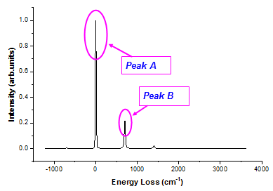
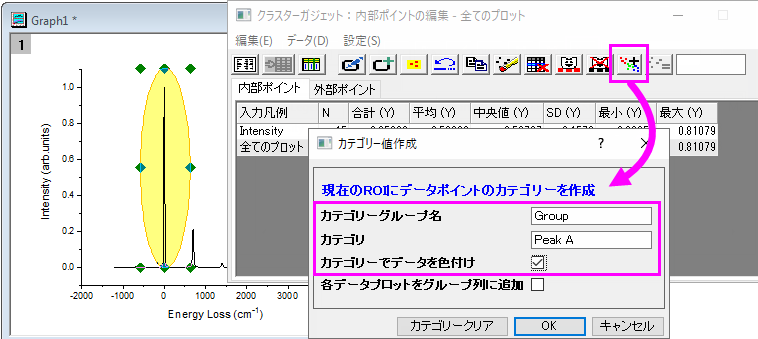
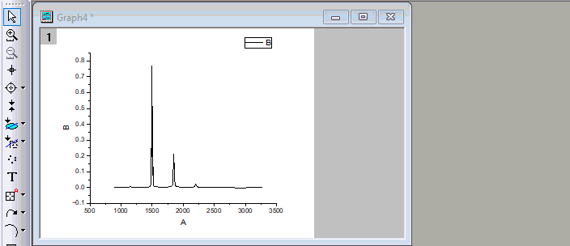

FAQ-874 折れ線グラフで領域に色付けする方法は？
Color-Regions-of-Line
最終更新日：2023/7/31
折れ線グラフの領域で色付けするには以下を使用できます
領域をカテゴリにグループ化し、カテゴリデータごとにカラーマップ 折れ線を作成します。
| Note: クラスター操作ガジェットはProのみの機能です。
|
クラスターガジェット
例えば、下図の折れ線グラフでピークAとBを強調表示したいとします。

- グラフをアクティブにして、メニューからガジェット：クラスター操作を選択します。
- ダイアログで、ROIボックスタブの形状を円形にし、ROIがピーク領域を柔軟にカバーできるようにします。OKをクリックしてROI円をグラフに配置します。
- ピークAにROIを移動し、2つのアンカーを調節してサイズと形状を変更し、ピークAの領域を覆います。
- クラスターガジェット：内部ポイントの編集ダイアログでカテゴリーを作成ボタン
 をクリックします。
をクリックします。
- Create Categorical Value ダイアログで、カテゴリーグループ名とROI内のデータポイントのカテゴリー値を入力します。カテゴリーでデータを色付けのチェックを付けてこのカテゴリ値をデータプロットの色インデックスとして設定します。
- 
- ピークBについても操作3から5を繰り返して、カテゴリー値を設定します。
- ソースワークシートに行くボタン
 をクリックしてソースデータを開きます。指定したカテゴリー値が入力された"Group」列が追加されます。
をクリックしてソースデータを開きます。指定したカテゴリー値が入力された"Group」列が追加されます。
最終的に以下のようなグラフになります。

データハイライター
上述のチュートリアルはデータハイライターでも実行できます。以下のように操作します。
- グラフをアクティブにして、プロット操作・オブジェクト作成ツールバーのデータハイライターボタン
 を選択します。
を選択します。
カーソルがデータハイライトモードになり、データハイライターミニツールバーがグラフウィンドウの右上に開きます。
- ドラッグして、ピークAの領域を囲みます。この領域内のデータ ポイントが強調表示されます。
- ミニツールバーからカテゴリ作成ボタン
 をクリックします。これにより、カテゴリー値作成ダイアログが開きます。
をクリックします。これにより、カテゴリー値作成ダイアログが開きます。
- カテゴリに名前を付け、強調表示されたデータ ポイントにカテゴリ値を指定します。カテゴリーでデータを色付けのチェックを付けてこのカテゴリ値をデータプロットの色インデックスとして設定します。
- ピークBについても操作2から4を繰り返して、カテゴリー値を設定します。
- 
- ソースデータのワークシートを開くと、指定したカテゴリー値が入力された「Group」列が追加されます。
キーワード:折れ線, カラーマップ, グラフの領域, ピーク色付け